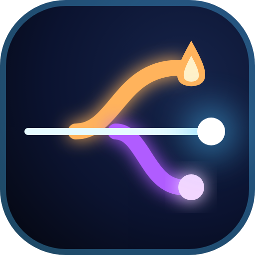
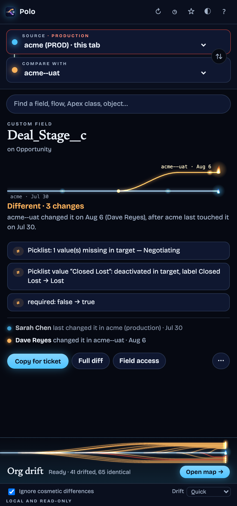
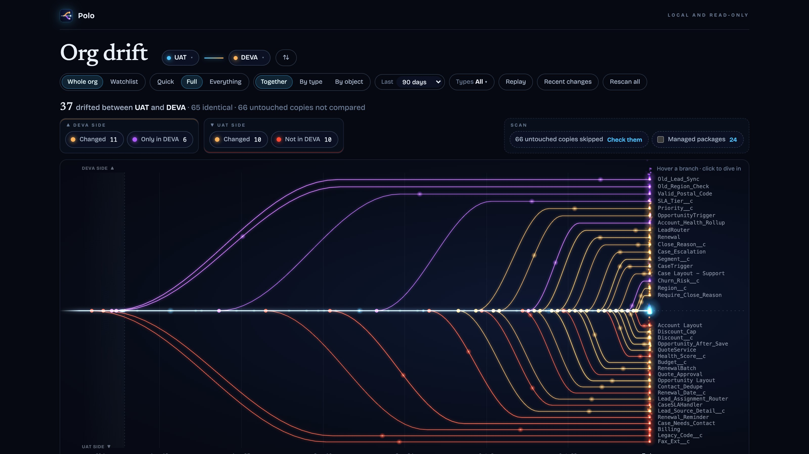
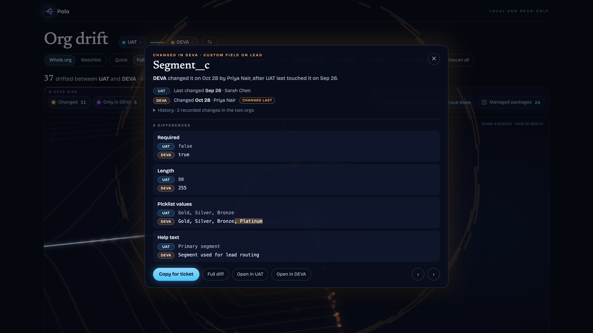
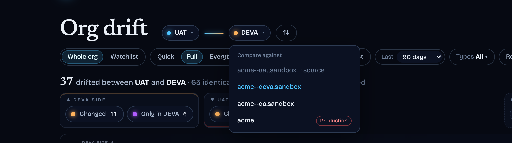
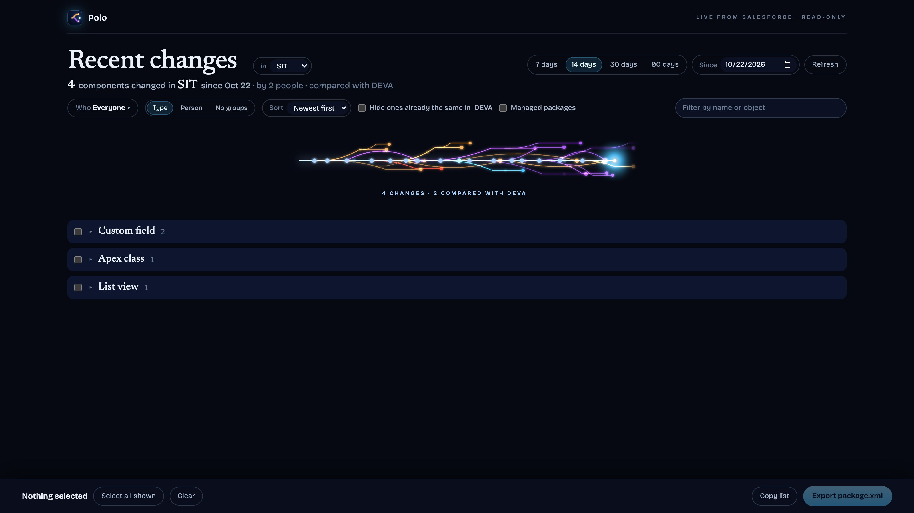

A Chrome side panel that lives next to Setup. Click a component and Polo tells you whether it's the same, different or missing in the org you're comparing against, what changed, and who changed it. Open the Org drift map and you get every difference between the two orgs at once. No OAuth, no connected apps, no new passkeys: if you're signed into the org in Chrome, Polo can see it. Read-only, and your metadata never leaves your browser.

Six short looks, each under half a minute. Tap one to play.
Is it the same in prod?
The Org drift map
Dive into any branch
Quick, Full or Everything
Recent changes to package.xml
Watchlist to release report
Open Polo next to Setup and it follows whatever you click. No copy-pasting API names, no second window, no two Setup tabs side by side and squinting.
A straight line means the two orgs match. A branch means one of them moved, and it shows you which one and when. Every change reads as a plain sentence: “required: false → true”, “picklist value missing in target: Negotiating”, with the full diff one click away.
One line per org with the person and the date. Full history merges the Setup Audit Trail and flow versions into one timeline for both orgs, live from Salesforce.
Field access shows which profiles and permission sets can read or edit a field in each org: the “works in sandbox, broken in prod” answer a metadata diff can't give. Compare a permission set's access, scan a whole object, or diff two versions of a flow.
Copy for ticket puts the facts on your clipboard for Jira, Slack or the PR: what differs, where, who changed it last. Report opens a print-ready page of the diff and history.
Pick two orgs and Polo lists both, compares everything they share, and draws the result. Everything that matches is one glowing line. Every component that drifted branches off on the day it changed and runs to today: above the line if the target org moved, below if the source did.



Real orgs have thousands of components. Speed matters, and so does knowing what you're looking at. One switch decides how hard Polo looks.
A few bulk queries per type. Exact for Apex, Visualforce, Lightning components and custom labels. It compares content, never deploy dates, so a pipeline that re-deploys the same code doesn't light up the map. What Quick can't settle, it says so instead of guessing.
Reads every changed component's full definition: fields, flows, layouts, rules, pages and the rest. Slower, and it's the one to run before a release.
Full, plus what only the Metadata API can read: sharing rules, approval processes, org settings, translations, Agentforce. It needs “Modify Metadata” on your user, so it's opt-in.
Every component changed in an org since a date you pick, grouped by type or by person, and checked live against the next org in your pipeline.

Tick the changes that are ready and Polo writes a Metadata API manifest for exactly those components. Retrieve from source, deploy to target, with your normal tooling and your normal approvals.
Add anything to the watchlist and re-check it in one click. Turn on the daily re-check and Polo badges its toolbar icon when something drifts. The map can show just your watchlist, too.
Export ↓ saves it as polo-watchlist.json, Import ↑
restores it on another machine or hands it to a teammate. Release report ↗
turns it into a print-ready go/no-go table, action-needed rows first.
Polo rides on the Salesforce sessions you already have in Chrome. That turns out to matter more than it sounds.
No connected app, no OAuth dance, no package, no API user to provision. Log into Salesforce in Chrome the way you already do and every org you're signed into shows up in Polo's org picker.
Polo matches components by API name, never by ID, so the two orgs don't need to be related at all. Two customers on different stacks, an old org and the one replacing it, a client's prod against your reference org: if you can log into both, you can compare them.
Polo only ever reads. Metadata goes from your orgs straight to your browser and stays there: no servers, no accounts, no telemetry.
package.xml, you run the
retrieve or deploy. Its network layer is hard-wired to read. The one exception is the
Metadata API's list and read calls, which Salesforce only offers as POST requests;
Polo can't send any other kind.The side panel is free, for good. PRO adds the org-wide view: one key, one payment, no subscription.
Checkout opens shortly. Meanwhile the 7-day free trial needs no card at all.
Checkout opens shortly.
How many orgs you compare, what your release process looks like, what you'd want Polo to do next: a short email is enough.
chris@creedysolutions.com